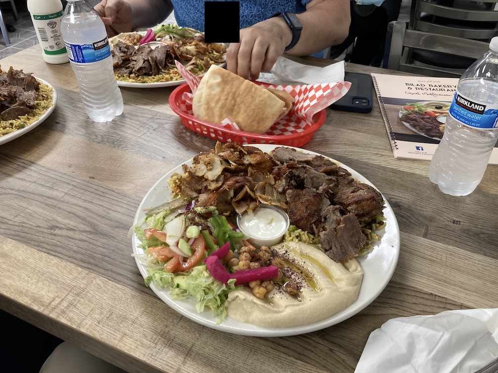
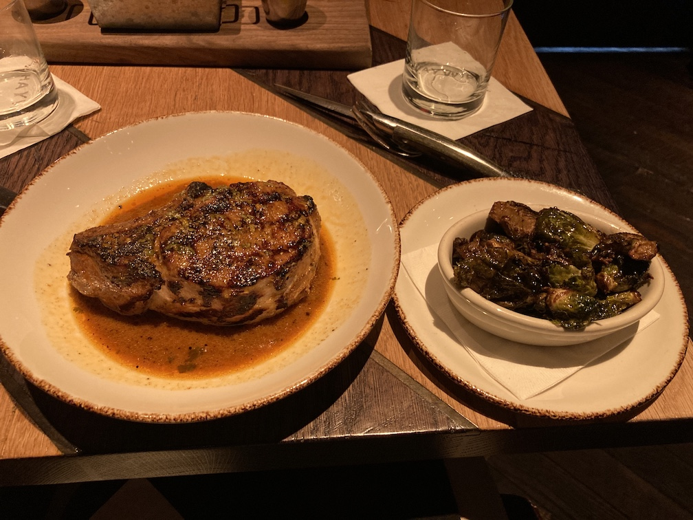
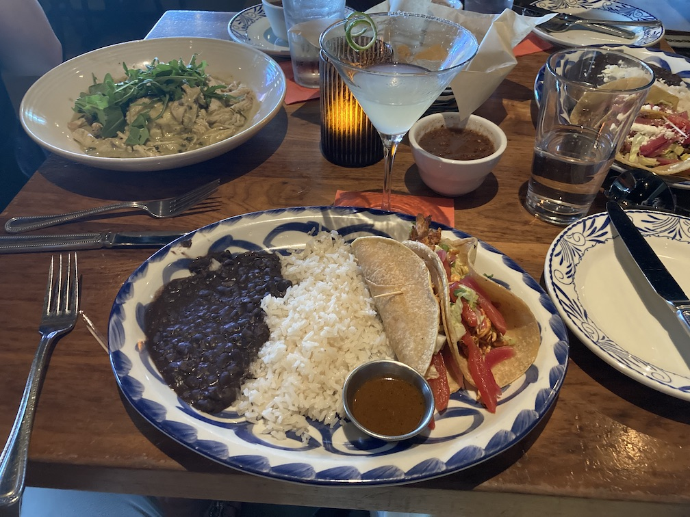
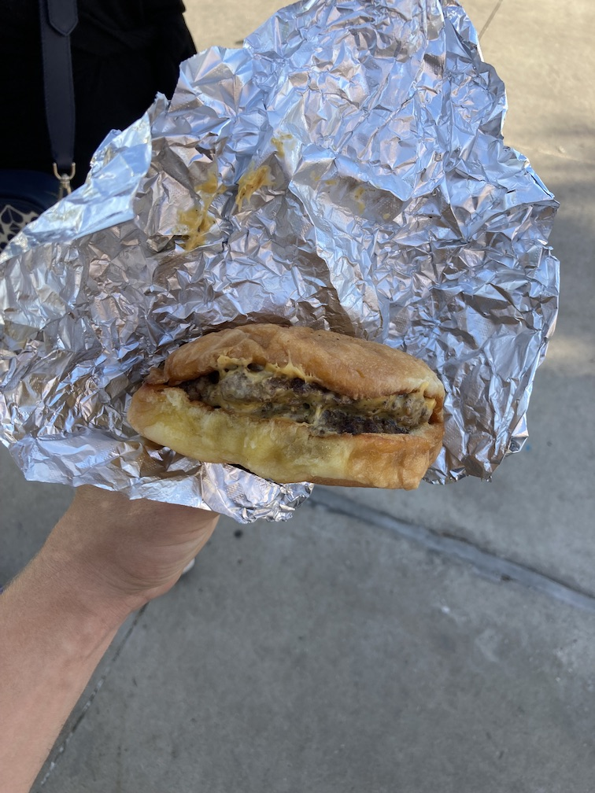
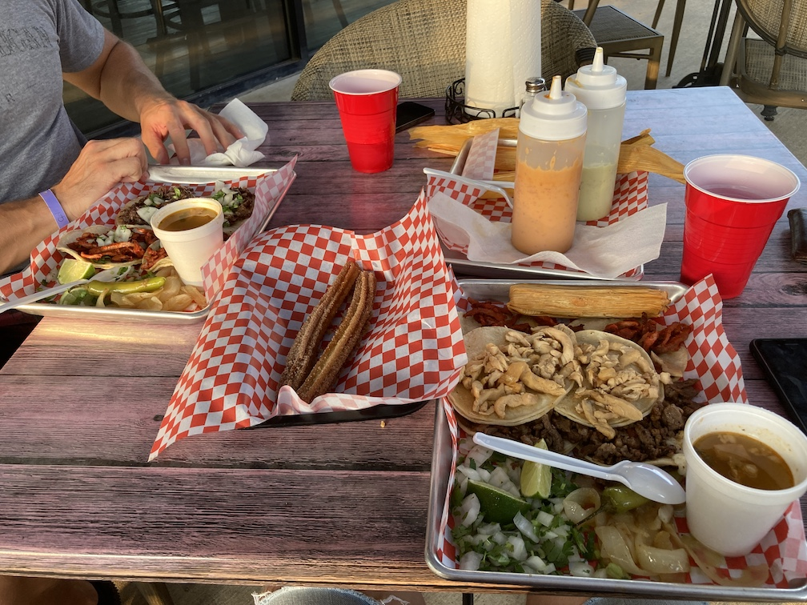
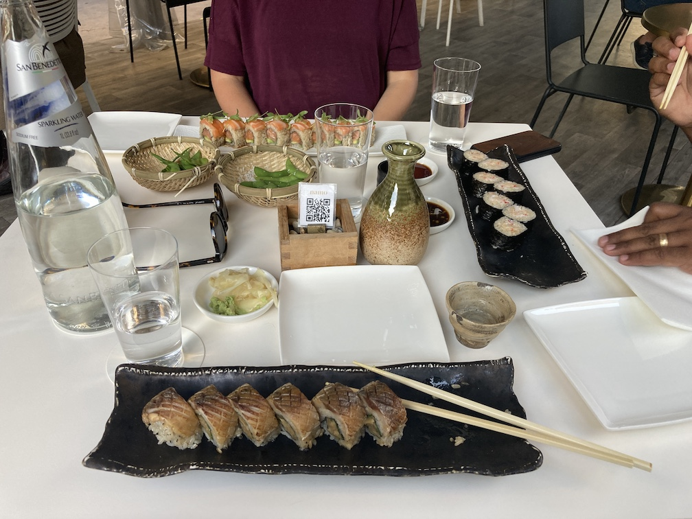
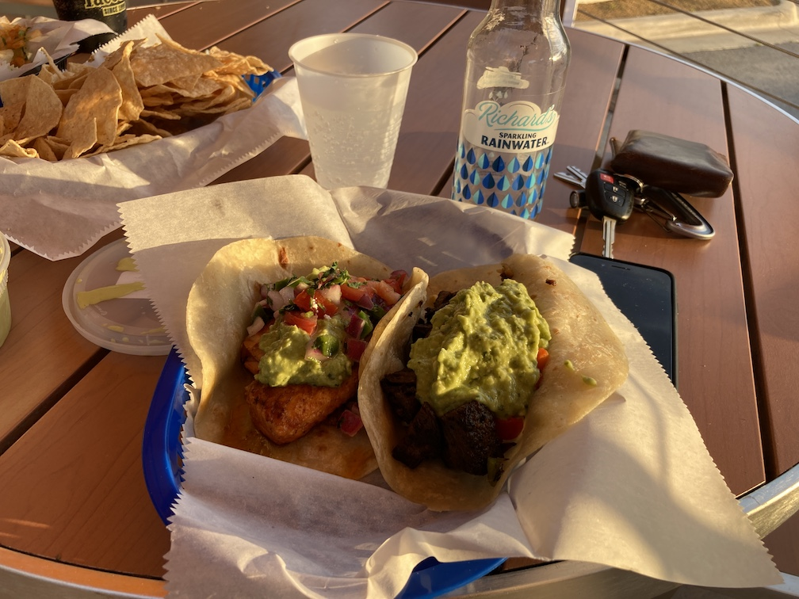
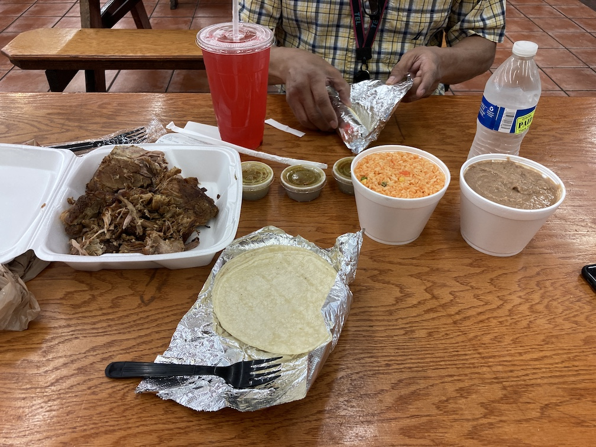

My experiences at restaurants mostly across the Dallas-Fort Worth metroplex, along with a few others. I don't claim to be a food connoisseur—this page is to help me remember what I've eaten and offer suggestions to others.
A running list of restaurants I want to eat at. This list is to help me remember.
Labeled as fine dining on Google, Garden Cafe doesn't meet that bar, but it was still pretty damn good. They're known for brunch options, so I'll have to go back since this was dinner.
For an appetizer, we got the blistered shishito peppers with lime juice, fresh cilantro, queso fresco, crispy shallots. Some peppers were slightly crispier and others soft, a nice blend in case you enjoy both textures.
The bar is spiritless, but they still make cocktails with the wine and beer options they have, which is pretty cool (although I'd much prefer liquor...). I got the Garden Spritzer, which consisted of fresh mint, jalapeño, house-made lemonade, and Ellum Ranch Seltzer. My brain made the lemonade-sugar connection wayyyyyy too late after being blinded by the seltzer part, so I had to sip on that sugary garbage all night long. Should've just gone for a glass of wine...
Our waiter raved about the gnocchi popagano (with roasted trumpet, maitake mushrooms, spinach, and ricotta), making the main choice fairly easy for me. (I'm a big fan of letting waiters choose unless a) there's something that really catches my eye, or b) I came there for a specific dish. They know what customers like, probably know food well, and have tried all the other dishes, so their opinion is valuable.) And valuable it was: the gnocchi was phenomenal. Pasta was fully cooked and the potatoes melted. Yum.
Service was excellent. Atmosphere very old-school cafe like with the booths and layout. They had a garden seating area outside but it was too cold that evening. Plentiful parking on the side.
I was so excited for Homewood until I walked in the door and smelled the place. Eggs. Not rotten, but not fresh. We all looked at each other and came to the same egg-y conclusion. I wish we had asked what it was, but it definitely put a damper on the entire experience and meal alike. Very disappointed in this.
We started with cocktails, mine being the Permission Slip:
persimmon & maple infused tequila, thai chili & cinnamon sugar [on the rim]
Pretty delicious, albeit the cinnamon sugar was difficult to get off the rim (maybe by design?). We then ordered our appetizers:
For the main entrees, we had:
Service was excellent. Waters were kept refilled, they were attentive with used dinnerware and napkins, made sure our tables was cleaned between courses, and knew the menu fairly well.
I'd like to try this again, but would honestly probably call ahead to check on the egg smell. It was seriously offputting...
Ricky's is a staple amongst my coworkers. It's the safest go-to when no one can decide where to go to lunch. It's close, quick, cheap, and, most of all, delicious. The standard Ricky's entree is their tender combo: three large tenders, fries, a piece of bread, pickles, and a drink. Sauce is $0.50 per cup. With tip it comes out to $12-ish dollars, an excellent deal for a superb meal. I've never gotten anything besides this (except for once, see the bullet points below) and it stays consistent.
They tout just how hot their chicken can get, and man, it's no joke. From their website's FAQ:
Our heat levels are not created equally and all have slightly different taste profiles!
- NO HEAT has a hint of heat but nothing a 2 year old can’t handle
- MILD goes through our spiced oil bath
- MEDIUM is like a jalapeño
- HOT has habanero
- XHOT we start adding ghost and scorpion
- A-BOMB has all of that PLUS reaper!
I once got the extra hot during lunch and had to leave work early my stomach hurt so bad (I ate the meal on an empty stomach—terrible decision, I know). I warned a friend about the hot and suggested he get medium. He very plainly said he's getting hot and proceeded to not finish his third tender because it was so hot. If hot food is your thing, go here and dial it down one spice level for starters. Or don't, your call. They also offer a nugget flight consisting of one nugget of every heat level.
Their speed is insane. On average, it takes 5-ish minutes from ordering to receiving food. It's unparalleled efficiency in the restaurant business: they got cashiers, friers, breaders, spicers, boxers, and deliverers. In and out if you're short on time, in and out if you're hungry, in and out if you just plain hate people and want to spend as little time as possible inside.
A few extra points to make:
Highly recommend going there if you're ever in the Dallas area. Definitely worth making the drive from wherever you're staying!
My cousin and I went here for their 5:00pm Saturday tasting menu. Six courses plus a welcome cocktail for a whopping $180, but it is BYOB, which we took advantage of with our three bottles of wine. The once-in-a-lifetime menu this go-around was (I can't remember what the welcome cocktail was, but it fit with the menu below):
The food was superb. I'm sure my palate is not refined enough to have noticed the intricacies of each dish, but they were delicious regardless. I'm sure being slightly drunk also helped... One thing that I think people get wrong about these small-portion, high-cost restaurants is the purpose: the point isn't to get your money's worth in serving size/satiety, but rather to experience ultra-high-quality foods that are mixed together to form a delicious course. Any French Laundry dish is small in comparison to most American dishes, but it easily makes up for size with quality, taste, and overall satisfaction of the senses.
The service was also excellent. There were three waitresses covering all tables non-exclusively, but my water was kept refilled and they engaged in conversation, all while explaining each dish and exactly how it was made. One of them even hooked it up with a fresh menu for me to take home since I got food on my other one—whoops!
The atmosphere of the restaurant was spot-on for what I expected. The building was old, and according to one waitress, leaked in certain spots whenever it rained and had spotty electrictity. My cousin and I were by far the youngest patrons amongst a mix of older individual couples and groups. The lighting was done by lamps and candles. Other patrons were respectful with their noise and manners, something that I'm guessing the price of the meal helped with.
Was the tasting menu worth it? Absolutely. Would I go back again? Only with someone who really likes food and was probably a significant other. Would I go for their à la carte options? Heck yes.
Phenomenal food and portions here. I got the mixed (beef and chicken) shawarma platter and oh my, did they deliver:
Copious amounts of beef and chicken laid over a generous bed of rice, surrounded by mixed vegetables and hummus and accompanied by freshly-baked pita bread. I'm not sure of the official name for the bread style, but the middle was split open, allowing food to be packed in there for easy eating.
The value here is immense in terms of both cost and taste. They double as a bakery, so baklava is a must-have after the main course.
Very underwhelming experience food-wise here. But first, the view was phenomenal. The southwest side of the restaurant looked out onto the Dallas skyline, while the east side offered endless views of the expanse that is the Dallas metroplex. Clear, sunny skies made it nice.
My friend and I arrived before the rest of the party, so we ordered drinks (I got a surprise Dealer's Choice, which is completely up to the house mixologist) and soaked in the view. Our party arrived, we closed out the bar tab (apparently they can't transfer it over to the table?), and we were promptly seated.
Appetizers included Parker Rolls with maldon salt and Texas honey butter and bone marrow with green apple butter, xo sauce, and wood grilled country bread. Good food here.
I ordered the 16 oz New York strip medium-rare and got a disappointing medium... The outside was also charred beyond comfort. Two "enhancements" were added: seasonal crab and wood-grilled asparagus. Bearnaise sauce/dip (?) was on the side, but was not to my taste, nor any of my friends. I regret not getting wine to go with the steak.
For sides, we got fries, brussel sprouts, mushrooms, and mac and cheese. Dessert consisted of the Valrhona Chcocolate 3-Ways: milk chocolate bavarois, dark chocolate mousse, and white chocolate panna cotta. Super delicious and rich, a wonderful cap to the end of the meal.
Service was excellent. The hostesses greeted us from afar and helped us to the lounge while we waited. Our waitress was polite, enthusiastic, knowledgable, and moved with a sense of urgency. My water glass never went empty and I never noticed it being refilled.
I was a bit surprised about the lack of dress code. I wore slacks and a shirt, but there were some people in shorts, sneakers, T-shirts, you name it. Whatever happened to standards?
Located inside the Hotel Crescent Court lobby, Nobu is one of Dallas' premiere sushi spots, along with Uchi, the atmosphere and service did not disappoint. I was surprised to learn this is a chain! A friend I went with had been to five other Nobus! What! I'm still up in the air regarding the food—I think my palette needs to be more refined before I can truly enjoy going there. I was surprised to hear that Nobu is a chain, albeit a classier one. I will not seek going back here on my own.
To start, we got salmon tartare with caviar, shishito peppers, onion tempura, pumpkin tempura, yellowtail jalapeño, and crispy rice with spicy tuna. Salmon tartare was interesting—the salmon was in a cylindrical shape with the caviar covering the top. Spoons were used to cut into the delicate fish. Crispy rice with spicy tuna was by far the best. Spicy tuna was forked onto a fried rice cube and eaten. Delicious! A bottle of house sake was used to wash everything down.
For our main course, I got sashimi consisting of chu toro, snow crab, Japanese mackerel, and octopus. Everything was as expected and I enjoyed the chu toro the most of all four. Again, my palette needs some work before really figuring out the nuances and intricacies of the dishes. I had a small piece of a friend's uni and while the ocean taste was not nearly as strong as the first time when I tried uni, it was still there, lingering in the back of my mouth for a few seconds after swallowing.
Service was excellent. Water was kept refilled the entire time, and a very kind waiter patiently asked us "have you enjoyed this before?" whenever dishes were brought out. "No, sir, we haven't!" was the unanimous answer for every time he asked, so he explained exactly how to eat it, which we may have eventually figured out, but probably not before the dish was finished. Shoutout man-whose-name-I-do-not-know! It was quiet and somewhat dark. I was surprised about the laxness of dress. I wore a tucked-in, rolled-up, long sleeve button-down with slacks, while others were in sneakers and jeans.
Sadly, I forgot to take a picture of my food.
Solid taste and portions here at Pecan Lodge. One of Dallas' most famous (if not the) barbecue joints located in Deep Ellum, it did not disappoint. I got the three-meat plate with jalapeno-cheddar sausage, brisket (because you can't not get brisket), and pork ribs with a side of beans. Pretty sure we got more than what we paid for because of how late we showed up. Side note: this seems to consistently happen at places! I don't want to be that guy but...
Brisket was a tad dry and could have been more fatty, but that's the luck of the draw. Sausage good, pork ribs came right off the bone. Beans okay, but I've never had beans I rave about unless they're honey baked beans, but that's because there's an excessive amount of sugar in them.
My friends got banana pudding (highly recommend) and fried okra (moderately recommend).
Atmosphere was nice, we waited for about 15 minutes in line, and there was plenty of seating inside.
Superb experience here. The ambience was unique: there were young professionals like us four, there was a table of younger people dressed more street-like, there was a table of 16 or so older people (50+ easy), and there were many dates. A mix of walks of life throughout the restaurant.
Service was good. I don't remember our waiter's name (it's been a few days), but he was knowledgable about the menu, personable, and made sure we were taken care of by checking in and giving regular refills on my seemingly-disappearing water.
I got the local meat and cheese board for our group:
wild game sausages / local cheeses / seasonal house preserves / honeycomb / pickled veggies
This was solid, albeit not that much food. Wagyu beef pastrami was included in the sausages, peach-something and apple-something jams paired well with the crackers, and the cheeses meh (I'm not a huge fan). Not quite as good as the charcuterie board a few friends and I made the weekend prior, but what matters is they tried (just kidding—it was on par).
For main course I got the mesquite-grilled double porkchop:
chile brined / carnitas style rub / natural au jus / brussels sprouts
Delicious. I was surprised the pork chop was boneless, but whatevs. Brussels sprouts were a tad soggy. In hindsight, I wish I had gotten a steak, which seems to be their pride and joy menu item.
I really enjoy the concept of farm-to-table because of how much it supports local businesses and cuts out the middle man. Corporations rarely have better food, and given identical options, I'm choosing the local farmer every time. For the ethically-inclined, the food is more traceable back to its origin.
I got the pollo tacos sans queso fresco:
pulled roaster adobo chicken breast, romaine lettuce, tomatoes, avocado tomatillo sauce, pickled red onions, queso fresco, cilantro
and a Mexican martini:
hand-shaken, fresh lime juice, cointreau, avion silver tequila
Tacos good, drink strong, service poor, ice-less water lukewarm, not sure how I feel about this place. Would I go back? Probably. Would I be the one to choose it? No. Would I suggest another place in lieu of this? Yes. Food was good, just a tad expensive for the portions.
The atmosphere was very nice. I went with two friends and we stayed for about three hours just chatting in the candlelight and enjoying each other's company. This would make for a great date night.
For the record, I never planned to eat five hamburger patties (two doubles, one single) in a single day, it just kind of happened. I regret nothing.
First stop was Whizzbang's in Union Hall, a small food court in Waco. Pretty good, but nothing notable.
Second burger was Fat Ho Burgers, a small food truck outside a grungy nightclub. While the wait was a bit long (20 min for a double cheeseburger and minimal line, really?!), oh my goodness was it worth it. I'm normally a food-is-food type of person—I can't tell the difference between two decent-quality pizzas, that kind of thing—but this changed my perspective. Maybe it was how much I had been hyping it up, maybe it was the smell, who knows. But from the moment I got it piping hot off the grill to the moment I ate it, 40 minutes had elapsed. Why? The aluminum foil it was wrapped in was industrial grade, to the point that I burned my hands any time I tried to pick it up. That first bite, though: heavenly! The meat perfect, the bun buttery (this was probably a major contributor), the entire thing greasy. I will absolutely be making pit stops in Waco when passing through. A bit expensive at $13 for double cheeseburger and fries, but worth supporting the small business.
Milo was an upscale restaurant whose burger was decent, but it's like presenting directly after the smartest kid in class: you just can't win no matter how hard you tried.
This taqueria was recommended by a friend for their $1 trompo tacos. I had finished about six hours of continuous yard work, so I was hungry as heck and ready to chow down.
I ordered six spicy pork tamales, two chicken tacos, two carne asada tacos, two trompo tacos, a regular churro, and a frozen mango margarita to wash it all down. Tacos came with two tortillas per, along with regular and grilled onions and beans. For $2.50 per two tacos, the portions were excellent. (Sadly, the $1 taco Tuesday deal only extended to the trompo tacos.)
There were quite a few other options on the menu. The restaurant was clean and staff friendly. Service a bit slow, but they were busy, so no harm.
It appears the area Desta is in is pretty Ethiopian, or at least they come from miles around—my friend and I were the only non-Ethiopian people in the restaurant (out of 20-30!).
Service timeliness was quite poor. It took us 15 minutes to get our drinks, then 20 minutes to get the checks after we were obviously done. The waiter was very nice and joked around with us a bit.
I got doro wot, which comes with injera, the Ethiopian "sponge" bread (or so it looks):
Slow cooked spicy chicken made with hot berbere (chili) sauce flavored with onion and garlic
Ethiopian food is generally eaten by tearing off a piece of injera and using it to "claw" the food, creating a mini-sandwich of sorts. It was pretty awkward doing this with chili, but a solid grip followed by a dip gets enough of it on the bread.
This dish came with a single chicken drum, and for the price of $18.00 (not including gratuity), that's unreasonable. There was plenty of the sauce, though.
While I enjoyed the experience, I would not come back here because a) slow service, b) small portions, and c) excessive price.
An upscale sushi restaurant in the heart of Uptown, this place definitely gives off nice vibes. The hosts/waiters are swankily-dressed and all young and good-looking. The overall restaurant is clean and sharp. We sat in the covered patio area directly out front and were quickly met by our waiter.
I don't know much about sake, but the menu was extensive (as well as their Japanese whiskey collection). We got 10 oz of a lower-quality sake and my friend got an old fashioned which tasted good. I love the large single cube they used.
I got two rolls:
Our waitress was a bit pushy about ordering more food. I'm not sure if it's expected to order two or more rolls per person (we got four between three of us), but she was definitely selling the menu hard, to a point of "leave us alone". No music was heard, no boisterous parties were present, and the atmosphere was relaxed and fun.
Price wasn't horrible at $170 for four rolls, edamame, sake, a cocktail, and sparkling water.
Maybe it was the post-bike ride hunger (but probably wasn't since I ate a pound or two of meat at a Brazilian steakhouse earlier in the day), but this was pretty darn good.
I got two tacos:
Both of them had a healthy serving of guacamole, which isn't always my thing, but definitely gets others going. Meat seemed fresh and tender. Flour tortillas not too doughy nor thin.
I had Richard's Rainwater along with four to five cups of their on-tap soda water. They also have a decent drink menu.
Total price was $12. A bit pricey for me considering the portions, but the quality was worth it. Happy I went!
This was suggested by a friend, and now I owe him a big one. There's a small "restaurant" (if you can even call it that) right when you walk in. They have a variety of plates, family-style combos, or individual items (tacos, burritos, etc). I got the #1 for $16 altogether: one pound of chicken or carnitas, 8 oz rice, 8 oz beans (they gave me refried, I would have chosen charro), a dozen corn tortillas, and a few cups of salsa verde.
Everything was fantastic. Corn tortillas were obviously fresh. Carnitas was a mix of already-pulled and chunks of meat, all juicy. Rice moist as I like it. Didn't try the beans. Salsa wasn't too mild nor too spicy.
And I'd be doing a disservice to the business if I didn't talk about everything else. The bakery had a variety of sweets, including conchas (Mexican sweet bread), churros, and other traditional Mexican pastries. They had a mini tortilla factory pumping out fresh flour and corn tortillas. Their meat selection was like no other: chicken, pork, beef, marinated, non-marinated, seasoned, non-seasoned, fatty, lean, high-quality, not-so-high-quality, cheap, cheaper! This will probably be my go-to place for large meat orders, especially considering they're already marinated and the price is very competitive.
Highly recommend going here for the portion vs. price ratio and wide selection of other products.